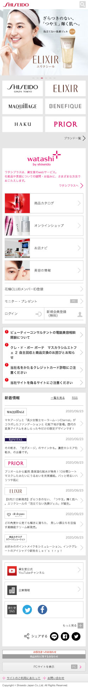
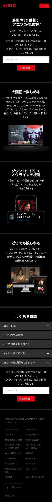
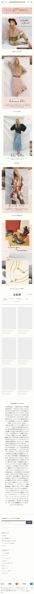

Alignment
Shiseido
shiseido.co.jp
This website is a great example of alignment. Always the button boxes and pictures are followed the determined horizontal edge. It let the website organized and keep it simple.
Contrast
Netflix
netflix.co.jp
Contrast is one of the important rules in the design principles. This website's background color is black, which is the primary color or branding color of Netflix I'm assuming. Headline and prioritized sentence's color is the oppsite color of black, white. It helps viewer's attention catch.
Space and Clean Design
Antholopologie
jp.anthropologie.com
Space and Clean Design is necesary to keep the same space and distance between each component. To create a clean website, we should focus on margins, gutters, rows and columns.